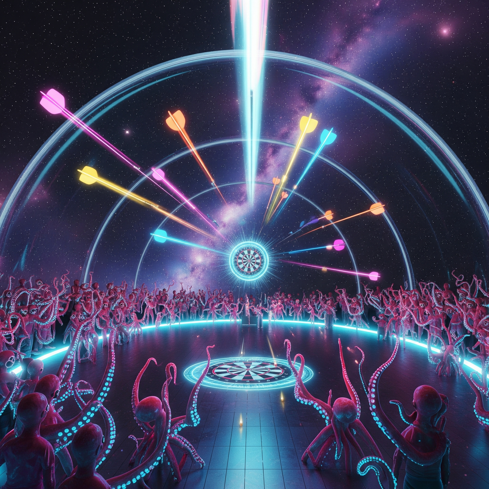

The Dart That Broke the Space-Time Vortex
Spacetime Gourmands

They called themselves the Spacetime Gourmands, a species floating in zero-G, laughing with jaws unhinged, born from the leftover dreams of Jupiter’s helium hurricanes. No bones, only gelatinous tendrils that could knot themselves into hats or telescopes or voting booths on a whim. Their cities? Fractal origami folded from dead comet nuclei, vibrating on resonant frequencies that made the rings of Saturn look like litter.
The arena, a cathedral ten kilometers long glass tube stretched taut between Saturn’s rings like a dental floss snapping dead stars’ teeth. The Spacetime Gourmands hung there, audience, spectators: a swarm of translucent jellyfish-thingies with necks longer than my arms and cheeks that gurgled liquid starlight when they giggled. “Darts game or astrophysical suicide?” one boomed, its voice a chorus of dying stars, while another slurped its tentacle-ear and mumbled about “gravity’s corpse” in between nibbling black hole fudge.
The game protocol was simple hit the 100-segment board, floating in a vortex at the tube’s gut, where the rules of everything got punch-drunk. But they hadn’t factored in my knack for making reality’s pacemaker skip a beat.
Sudden spacetime ripple announced itself via my opponent’s shoe crushing my experimental wormhole generator, a “borrowed” from the lab’s junk drawer. “Recursion or you’ll recur?”, he laughed, now upside-down mid-sentence, as gravity rebelled against its own pull.
Previous dart’s imprints on the wall now bloomed into a fractal of 40-mile traffic tickets left by every civilization above “Type 3” on the Kardashev scale. I licked the residue—a tang of antimatter lemonade off a prior throw. “The key’s in the singularity!”, Sir Vacuum croaked, his voice now an echo in an empty subway station’s throat.
“The universe’s elasticity, is just elasticity minus the math!" I counter-argued, balancing on a soap bubble now orbiting Saturn. Historic throws, having pierced the wall, now dribbled black holes from their tips like a faulty ink pen.
The room tilted, desks floating like wayward asteroid, the arena’s physics committee (a lone neutrino) shrugged out of existence.
I backhanded the gravity well forming near my foot. “You asked for a rulebook, I brought the author!”,
Suddenness. The Author’s rules throbbed in my marrow. “Each dart—” he’d hissed, back when I’d asked if throwing a black hole’s grandmother counted “must penetrate all ten kilometers of this glorified spaghetti strainer. Grav-pulls only. Ten hours maximum. If it doesn’t breach the far wall’s metaphysical parchment, you’re demoted to interdimensional mucus.”,
“Meaning” he sighed, plucking a quark from his collar, “every dart must chew through spacetime’s molars like aspirin. Exit fresh or explode into wet noodles. Thirty hours, three tries, and absolutely zero plot conveniences.” A supernova flickered in his throat as he added, “And don’t ask about the black hole fudge—someone’s thesis.”
“Spin’s not conserved here, Meat-mold!” Sir Vacuum sneered, his ascot unraveling into a live-action deconstruction of General Relativity Made Even Less Intelligible. His “clothes” were quantum states, flickering between tuxedo, squid. I ignored him. Instead, I marinated my knuckles in liquid dark matter, the stuff hissing like a greengrocer’s complaint when I poured it.
“So” I growled, “rules are optional if you’ve ever owned a pet named ‘Mildred the Insignificant Quasar’.”
I grinned, the Author’s voice a whisper in my ear (his ear now a pulsar): “Remember, the universe’s elasticity minus math? It’s just you and your teeth and a prayer to any god who forgot how gravity works.”,
First Dart
I fired a salvaged universe’s yawn. It groaned, gravity leaking from its seams. “Behemoth One” screamed “TACHYONS!” as it plunged—then stuck mid-tube, its grav-pull so weak it kept asking for a ‘time-out’. Sir Vacuum snickered, his monocle now an active volcano: “Pathetic! This isn’t darts—it’s a kamikaze interpretive dance!” His suit unzipped to vomit a textbook on Relativity for Simpletons.
The dart unspooled into existence, a neon-green comet hiccuping its way through the tube. It did not drop. Did not loop. It sailed, defying all known physics but theirs, which were “guidelines scrawled on a napkin during Titan’s happy hour.”
The 10-km void became its stage. The dart’s journey was a 5-hour cabaret of disasters:
- First 8 minutes: Drifted through a nebula’s lingerie section, getting stuck in a dead star’s garter belt of helium.
- 9th minute: Befriended dark matter. ”How’d you end up here?” “Ghosts forced me.” ”Cool.” They napped together like sloths in a supernova.
- 3rd hour: A neutron star sneezed; it backhanded the dart into a black hole’s waiting maw but the hole gagged (politeness apparently).
- 4th hour: The dart became sentient, then atheist, then a minor deity of chaos before remembering it was paid labor.
- Final minute: Punched through a spacetime demilitarized zone, igniting a 14-second war between the Gourmand’s rules.
Sir Vacuum’s wig caught fire, his outrage a supernova. “This is disintegrity—!” He attempted to unbirth the dart with math, but his calculator ate his soul to protest.
I let a quasar hum inside my throat before answering. “Check clause 4.12(b),” I said, tossing Sir’s ascot into a singularity-shaped hat, “about ‘sentient projectiles required to breach reality’s wisdom teeth.’”
Second Dart
Dark matter mixed with my dust’s voicemail recording (”you forgot the mucus in the event horizon”). Voicemail turned into a black hole’s diet plan). The arena’s walls began vomiting neutronium —until the dart’s tip caught on a poorly folded spacetime origami crease.
Sir Vacuum adjusted his fractal ascot, the edges shimmering with quantum static as I hurled the dart. “Spin’s not just a vector here, it’s a geodesic!” he declared, his voice warping like a radio broadcast interrupted by solar flares. My wrist flicked, sending the dart spiraling into the event horizon’s maw, where it embedded itself in a singularity’s jagged ceiling that groaned under the weight of paradoxes.
The Gourmands hummed the tubular organs, their tendrils weaving into disco lasers for fun. “Come on Meat-Fleck, the multiverse’s waiting for its eulogy!”, Sir Vacuum boomed, now wearing entropy as a scarf. His teeth were now reverse-flowing rivers.
The arena’s air? Nonexistent. My breath formed no vapor, just a grimace. “The tube’s integrity is not a democratic debate!” the Author roared, no sound carrying. The wormhole gurgled, now a carnival ride vomiting fractal roller coasters.
Sir Vacuum’s laugh echoed in reverse. “You’ve weaponized the plot hole!”
“Better than letting gravity have its way,” I said, now riding a spacetime ripple. Behind the far wall shivered, its parchment skin fraying. One Gourmand dissolved into applause, applause into white noise.
“FIFTY-SEVEN AND TWO-THIRDS MINUTES LEFT!” the neutrino judge hissed, its voice a broken synthesizer.
I lunged. Grabbed the first dart sticking out the wall like a giant splinter. Twisted. The wall sagged. The tube’s glass skin blistered, letting in the cold of: maybe existence wasn’t worth it. The Gourmands’ laughter now shivered, sound still a myth.
Sir Vacuum, half-disintegrated, screamed: “I’ll appeal to the metaphor!”
“The tube doesn’t do metaphors!” I screamed back—no sound, just mouth movements. The second dart, the voicemail black hole imploded, mid-air, unspooling into a scroll of unpaid parking tickets and Sir Vacuum’s PhD thesis: The Role of Anxiety in Early Neutron Collapse.
A shard of dark matter scraped from a cosmologist’s 3 a.m. panic, wrapped in a black hole’s lint. I nocked it, breath a static scream. The Author—snoring in a footnote somewhere—adjusted.
“The ten-km span? Expanded.”
The arena stretched. Like a rug in a nightmare. Ten kilometers became ten lightyears of spacetime’s bad haircuts—twisted, gravity-starved, now a gauntlet of quark jousts and neutron-star tollbooths. Sir Vacuum howled as his bowtie (a captured neutron star now a singularity suffocating under its own event horizon’s poetry collection). “SHE HAD TO CHEAT—!”
“Cheating requires rules”, I spat “and the rules breathe like asthmatic whales now.”
Third dart
I plunged my palm into Jupiter’s left eyelid—the only spot where liquid spacetime freezes edible—and forged a projectile humming with the existential dread of unfiled warranties. Sir Vacuum’s monocle (now a supernova nursery) hissed: “Negative vectoring! You’ve quantized my posterior!” His tail, a B-movie lightsaber made of unsinkable regrets, almost impaled a Gourmand mid-giggle. Their gelatinous hats unravelled into a combobulation of dying stars, hissing, “Faster than light? Is that calculus?”
My dart? It wobbled, not a thing but three interdimensional sneezes—sudden, explosive, its tip a sentient paradox dripping Gödel-number graffiti on spacetime’s sheetrock. Sir Vacuum’s monocle (a captured white dwarf star) exploded into a nursery of quasars. “That’s not how gravitation—” he sputtered, his bowtie now a black hole strangled by its own event horizon.
My dart spun, spun, drilling through a singularity’s bellybutton. Sir Vacuum’s hatpin—my borrowed singularity—started sprinting, yanking spacetime into a Möbius-strip hairpin, folding the arena into a Klein bottle of “no, not again”, whimpers. A Gourmand napped into a supernova’s afterbirth, snoring sonatas that unraveled my hair into polynomial dreadlocks.
The wall, split. Not a clean hit—but spilled, like jam. The void beyond squawked “BETS ARE OFF!”, as the rules reorganized: now the arena was a trampoline, and gravitons hissed like geese. Sir Vacuum (now a reverse-aged toddler fused with a quark) clawed at his dissertation dissolving into a cake recipe.
The neutrino judge (its soul a single exclamation point) hissed: “BREACH IS 78.2% valid. 8, 10: needs more deadpan. One hand tied behind cosmos.”
The Spacetime Gourmands erupted: half their hats imploded; others turned their tentacles to microphones, screaming “DO IT AGAIN! BETTER!”
The Gourmands were delirious. Their gelatinous hats unfurled into Doppler-shifted umbrellas, catching quarks mid-decay. One’s elbow had vaporized into a laugh track; another gargled with a mouthful of neutronium. “Elasticity-minus-the-math?” they bubbled, a chorus of collapsing superclusters. “The judge’s beard is the prime witness!” They awarded no points.